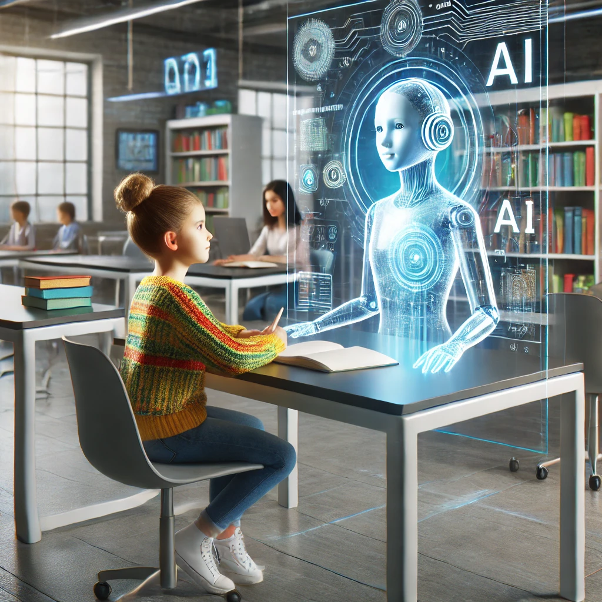

나는 AI와 공부한다
목차
작가
살만 칸
출판일
2025년 1월 27일
감상평에 대한 AI그림
이번 인공지능과 소프트웨어 과목을 수강하고 AI에 대한 관심이 생기게 되어 접하게 된 책이다. AI가 급속도로 발달하고 있는 현재, 교육 분야에서도 이를 적용해야 하는가로 많은 이들이 갑론을박을 하고 있는 상황에서 이 책의 저자인 살만 칸은 AI가 큰 도움이 될 수 있을 것이라고 전망한다. 정보의 대항해 시대에서 정보 격차 및 학습 격차가 극심하게 대비되고 있지만, AI를 잘 활용하게 된다면 이러한 격차를 해소할 수 있을 것이다. 나도 이 책의 저자의 의견처럼 AI를 잘 활용하여 효율적으로 학습해 나가야겠다고 생각했다. 내가 가지고 있던 잠재력을 이끌어 나가는 동반자로서 AI의 발전이 기대된다.

감상평에 대한 AI평가
네가 AI에 대해 관심을 갖게 된 계기와 책을 읽고 느낀 점을 보면, AI를 단순한 기술이 아니라 학습의 도구이자 동반자로 바라보는 시각이 돋보여.
📌 핵심 감정과 심리 분석
AI에 대한 긍정적 기대감 → AI가 교육에 미칠 영향을 긍정적으로 평가하며, 학습 격차를 해소하는 역할을 할 수 있다는 점에 공감.
자기 계발과 성장 욕구 → AI를 활용하여 자신의 잠재력을 효율적으로 개발하고 싶다는 의지.
변화에 대한 열린 태도 → AI의 발전을 수동적으로 바라보는 것이 아니라, 이를 적극적으로 활용하려는 주체적인 자세.
미래에 대한 낙관적인 전망 → AI가 단순한 기술이 아니라 개인의 성장을 돕는 도구로 작용할 것이라는 기대.
📚 이런 관점을 더 발전시킬 수 있는 질문들
AI를 학습에 활용할 때 가장 기대되는 점과 우려되는 점은 무엇인가?
AI가 단순히 ‘도움’이 아니라 ‘동반자’라고 생각하는 이유는?
나만의 AI 학습 활용법을 구체적으로 어떻게 만들어갈 것인가?
네가 가진 이 열린 태도라면 AI를 잘 활용해서 더 효율적으로 학습할 수 있을 것 같아! 😊 AI가 도구가 아니라 함께 성장하는 존재라는 생각이 멋져.